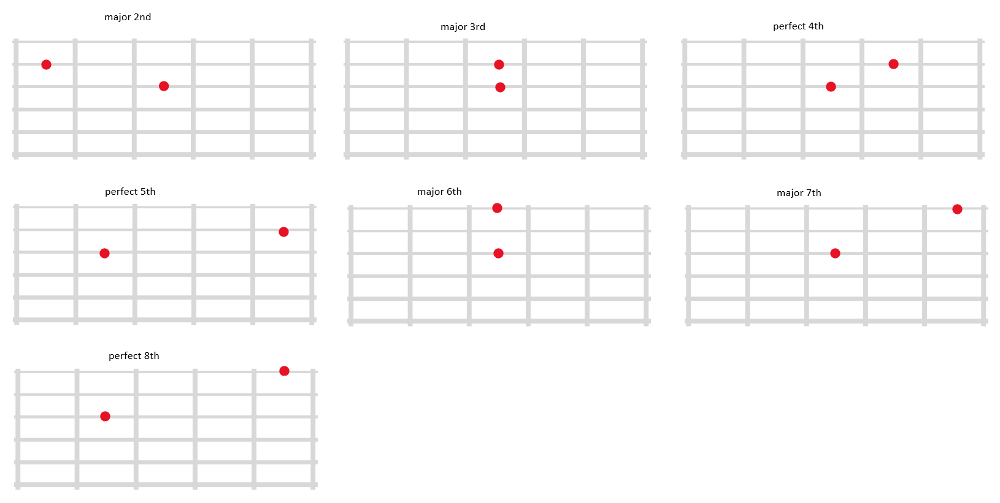
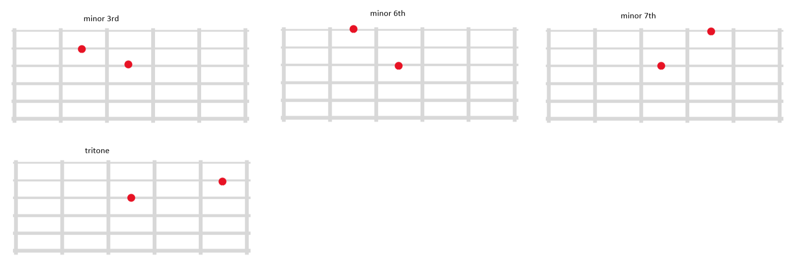

Elegance in Typography
The art of beautiful text presentation
We now have to learn the E and B strings. the tricky part is just that the intervals are shifted half step.
 if you get tired of comming up with new random notes you may use this terminal app
Typography.com